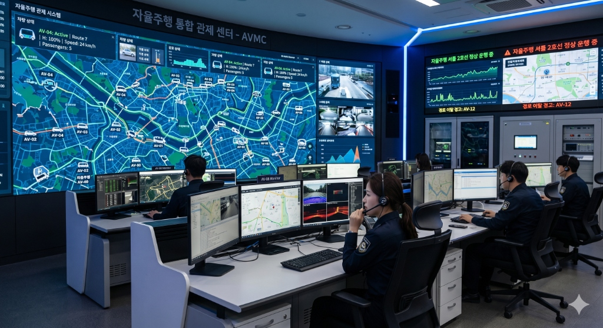
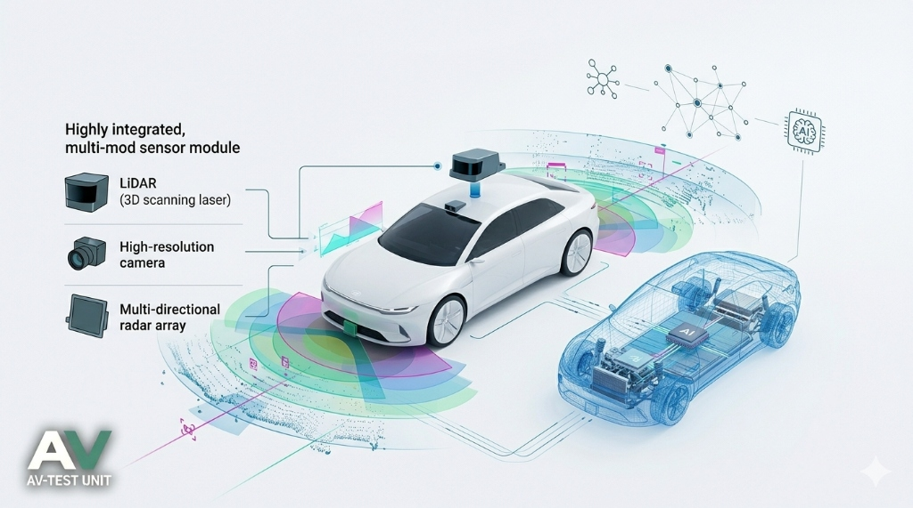
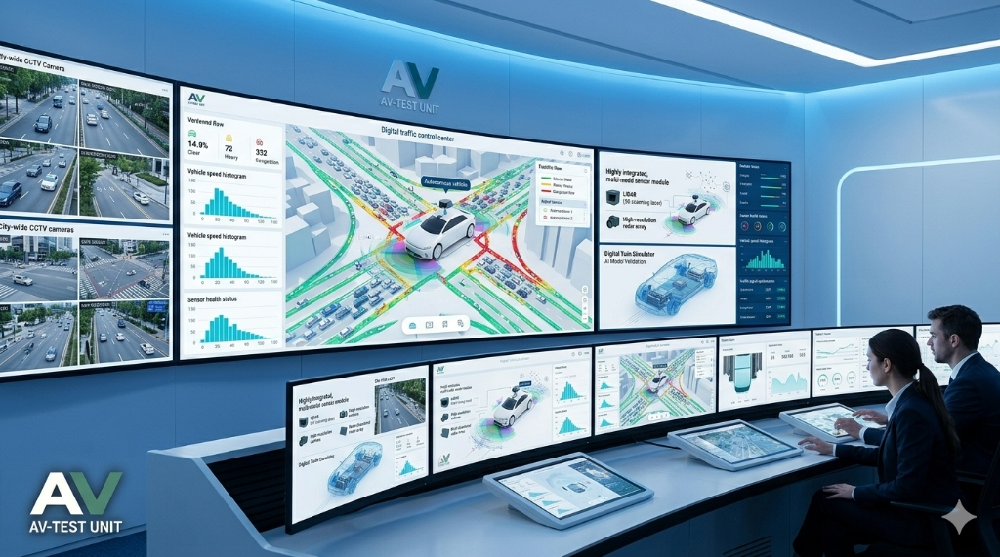
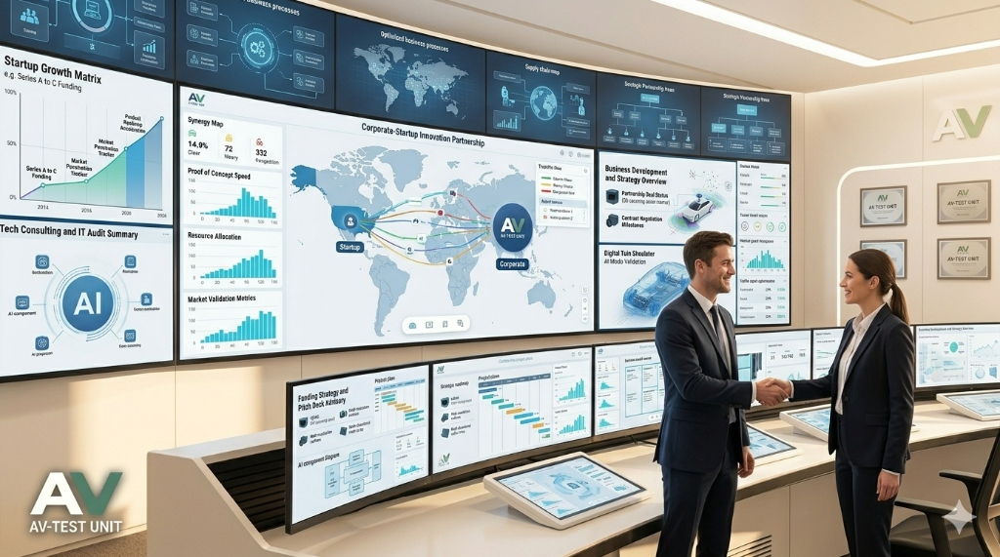
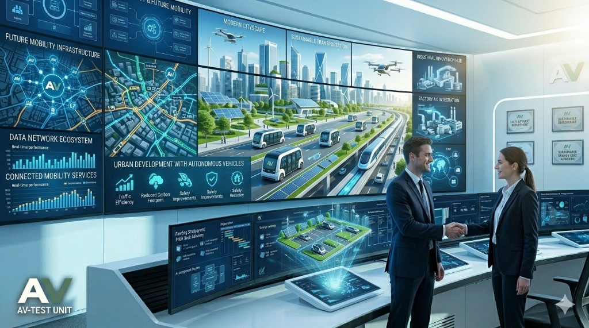

센터 설립 배경
자율·비자율 차량이 혼재된 복합 주행 환경에서 증가하는 데이터를 통합 관리하고 안전성과 효율성을 확보하기 위한 기반 마련
혼합 주행 환경 확대
- •자율주행차와 비자율주행차가 혼재된 복합 주행 환경 확산
- •도로 상황의 복잡도 증가 및 안전성 확보 필요성 증가
➔
데이터 급증
- •차량, 인프라, 센서 등 다양한 소스에서 대용량 실시간 데이터 발생
- •데이터 기반 분석 및 활용 필요성 증대
➔
통합 인프라 필요
- •분산된 데이터를 통합 관리하기 위한 데이터 거버넌스 필요
- •시험·평가 및 기술 검증을 위한 통합 플랫폼 요구 증가
센터 설립 목적
혼합 주행 데이터 기반의 분석·관제·검증 체계를 구축하여 자율주행 기술 고도화와 산업 생태계 활성화를 지원
Data Value
데이터 기반 기술 고도화
- 실도로 데이터 수집·가공·분석 체계 구축
- 자율주행 알고리즘 및 부품 성능 개선 지원

Safe Control
통합 관제 및 안전성 확보
- V2X 기반 실시간 상황 탐지 및 대응
- 혼합 주행 환경 안전성 검증
Industrial Ecosystem
산업 생태계 활성화
- 기업 대상 시험·검증·데이터 제공
- 자율주행 부품 기업 시장 진입 지원
추진 목표
실도로 기반 데이터 수집부터 시험·평가·관제까지 연계된 통합 플랫폼을 구축하여 기술 검증과 서비스 실증을 구현
자율·비자율 혼합 주행 데이터 기반 통합 플랫폼 구축
실도로 기반 시험·평가·검증 인프라 구축
기업 대상 기술지원 및 사업화 지원
데이터 기반 관제 및 서비스 모델 실증
추진 과제
데이터 수집·분석, 시험평가 시스템 구축, 혼합 주행 DB 확보 및 기업지원 서비스 제공을 통한 종합 운영 체계 구현
01
데이터 수집 및 통합 인프라 구축
- 차량·인프라 데이터 통합 수집
- 데이터 저장·가공·분석 체계 구축
02
시험·평가 시스템 구축
- 미래차 융합부품 시험평가 센터 구축
- 성능 검증 및 인증 지원
03
혼합 주행 데이터 DB 구축
- 운전행태 데이터
- 위험 데이터
- 환경 기반 데이터
04
기업 지원 서비스 구축
- 아직 미정
- 아직 미정
05
관제 및 서비스 실증
- V2X 기반 관제 시스템 운영
- 실도로 실증 및 서비스 모델 발굴
기대 효과
데이터 기반 자율주행 기술 경쟁력 강화와 실시간 관제 기반 안전성 확보, 기업 지원을 통한 사업화 촉진으로 지역 산업 생태계 활성화 및 미래 모빌리티 산업 기반을 조성

데이터 기반 자율주행 기술 및 미래차 부품 경쟁력 강화

실시간 관제 기반 도로 안전성 향상

기업의 시장 진입 장벽 완화 및 사업화 촉진
데이터 개방 및 협력 네트워크 기반 산업 생태계 활성화

지역 산업 구조 전환 및 자율주행 산업 성장 기반 확보